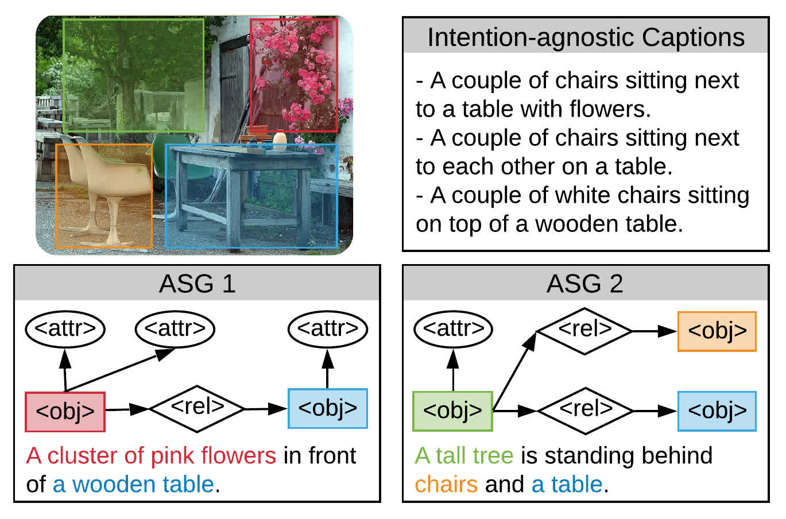
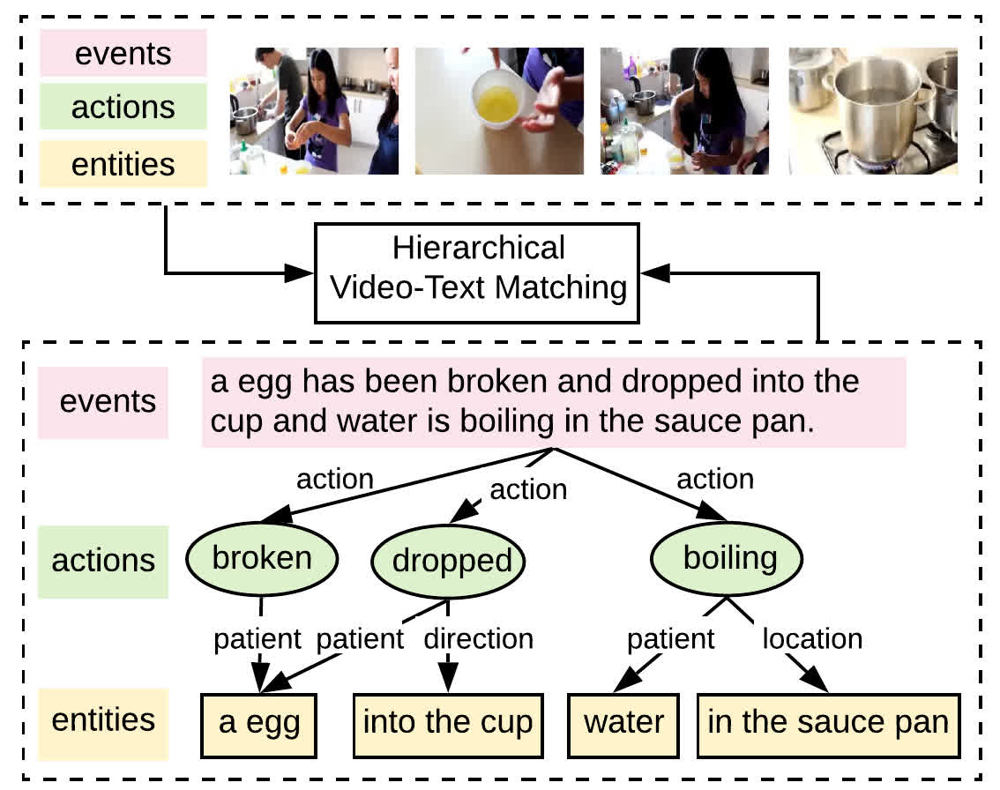

Research Overview
-
 Vision and Language
Vision and Language

Advancements in deep learning plus large-scale datasets have led to great progress in CV & NLP. Building upon these advances, there has emerged great interest in solving challenges that combine linguistic and visual information, such as: Image/Video Captioning, Cross-modal Retrieval, Multimodal Translation, Visual Relation Understanding, VQA, etc.
Multi-Lingual Acquisition on Multimodal Pre-training for Cross-modal Retrieval
Liang Zhang, Anwen Hu, Qin Jin
NeurIPS, 2022.
abstract
Vision and diverse languages are important information sources in our living world. A model that understands multi-modalities and multi-languages can be applied to a wider range of real-life scenarios. To build such a multimodal and multilingual model, existing works try to ensemble vision-language data from multiple languages in pre-training. However, due to the large number of languages, these works often require huge computing resources and cannot be flexibly extended to new languages. In this work, we propose a Multi-Lingual Acquisition (MLA) framework that can easily empower a monolingual Vision-Language Pre-training (VLP) model with multilingual capability. Specifically, we design a lightweight language acquisition encoder based on state-of-the-art monolingual VLP models. We further propose a two-stage training strategy to optimize the language acquisition encoder, namely the Native Language Transfer stage and the Language Exposure stage. With much less multilingual training data and computing resources, our model achieves state-of-the-art performance on multilingual image-text and video-text retrieval benchmarks.
TS2-Net: Token Shift and Selection Transformer for Text-Video Retrieval
Yuqi Liu, Pengfei Xiong, Luhui Xu, Shengming Cao, Qin Jin
ECCV, 2022.
abstract code
Text-Video retrieval is a task of great practical value and has received increasing attention, among which learning spatial-temporal video representation is one of the research hotspots. The video encoders in the state-of-the-art video retrieval models usually directly adopt the pre-trained vision backbones with the network structure fixed, they therefore can not be further improved to produce the fine-grained spatial-temporal video representation. In this paper, we propose Token Shift and Selection Network (TS2-Net), a novel token shift and selection transformer architecture, which dynamically adjusts the token sequence and selects informative tokens in both temporal and spatial dimensions from input video samples. The token shift module temporally shifts the whole token features back-and-forth across adjacent frames, to preserve the complete token representation and capture subtle movements. Then the token selection module selects tokens that contribute most to local spatial semantics. Based on thorough experiments, the proposed TS2-Net achieves state-of-the-art performance on major text-video retrieval benchmarks, including new records on MSRVTT, VATEX, LSMDC, ActivityNet, and DiDeMo.
Unifying Event Detection and Captioning as Sequence Generation via Pre-Training
Qi Zhang, Yuqing Song, Qin Jin
ECCV, 2022.
abstract code
Dense video captioning aims to generate corresponding text descriptions for a series of events in the untrimmed video, which can be divided into two sub-tasks, event detection and event captioning. Unlike previous works that tackle the two sub-tasks separately, recent works have focused on enhancing the inter-task association between the two sub-tasks. However, designing inter-task interactions for event detection and captioning is not trivial due to the large differences in their task specific solutions. Besides, previous event detection methods normally ignore temporal dependencies between events, leading to event redundancy or inconsistency problems. To tackle above the two defects, in this paper, we define event detection as a sequence generation task and propose a unified pre-training and fine-tuning framework to naturally enhance the inter-task association between event detection and captioning. Since the model predicts each event with previous events as context, the inter-dependency between events is fully exploited and thus our model can detect more diverse and consistent events in the video. Experiments on the ActivityNet dataset show that our model outperforms the state-of-the-art methods, and can be further boosted when pre-trained on extra large-scale video-text data
Progressive Learning for Image Retrieval with Hybrid-Modality Queries
Yida Zhao, Yuqing Song, Qin Jin
SIGIR, 2022.
abstract
Image retrieval with hybrid-modality queries, also known as composing text and image for image retrieval (CTI-IR), is a retrieval task where the search intention is expressed in a more complex query format, involving both vision and text modalities. For example, a target product image is searched using a reference product image along with text about changing certain attributes of the reference image as the query. It is a more challenging image retrieval task that requires both semantic space learning and cross-modal fusion. Previous approaches that attempt to deal with both aspects achieve unsatisfactory performance. In this paper, we decompose the CTI-IR task into a three-stage learning problem to progressively learn the complex knowledge for image retrieval with hybrid-modality queries. We first leverage the semantic embedding space for open-domain image-text retrieval, and then transfer the learned knowledge to the fashion-domain with fashion-related pre-training tasks. Finally, we enhance the pre-trained model from single-query to hybrid-modality query for the CTI-IR task. Furthermore, as the contribution of individual modality in the hybrid-modality query varies for different retrieval scenarios, we propose a self-supervised adaptive weighting strategy to dynamically determine the importance of image and text in the hybrid-modality query for better retrieval. Extensive experiments show that our proposed model significantly outperforms state-of-the-art methods in the mean of Recall@K by 24.9% and 9.5% on the Fashion-IQ and Shoes benchmark datasets respectively.
Image Difference Captioning with Pre-Training and Contrastive Learning
Linli Yao, Weiying Wang, Qin Jin
AAAI, 2022.
abstract code
The Image Difference Captioning (IDC) task aims to describe the visual differences between two similar images with natural language. The major challenges of this task lie in two aspects: 1) fine-grained visual differences that require learning stronger vision and language association and 2) high-cost of manual annotations that leads to limited supervised data. To address these challenges, we propose a new modeling framework following the pre-training-finetuning paradigm. Specifically, we design three self-supervised tasks and contrastive learning strategies to align visual differences and text descriptions at a fine-grained level. Moreover, we propose a data expansion strategy to utilize extra cross-task supervision information, such as data for fine-grained image classification, to alleviate the limitation of available supervised IDC data. Extensive experiments on two IDC benchmark datasets, CLEVR-Change and Birds-to-Words, demonstrate the effectiveness of the proposed modeling framework. The codes and models will be released at https://github.com/yaolinli/IDC.
Product-oriented Machine Translation with Cross-modal Cross-lingual Pre-training
Yuqing Song, Shizhe Chen, Qin Jin, Wei Luo, Jun Xie, and Fei Huang
ACM Multimedia, 2021.
abstract code
Translating e-commercial product descriptions, a.k.a product-oriented machine translation (PMT), is essential to serve e-shoppers all over the world. However, due to the domain specialty, the PMT task is more challenging than traditional machine translation problems. Firstly, there are many specialized jargons in the product description, which are ambiguous to translate without the product image. Secondly, product descriptions are related to the image in more complicated ways than standard image descriptions, involving various visual aspects such as objects, shapes, colors or even subjective styles. Moreover, existing PMT datasets are small in scale to support the research. In this paper, we first construct a large-scale bilingual product description dataset called Fashion-MMT, which contains over 114k noisy and 40k manually cleaned description translations with multiple product images. To effectively learn semantic alignments among product images and bilingual texts in translation, we design a unified product-oriented cross-modal cross-lingual model (UPOC2 ) for pre-training and fine-tuning. Experiments on the Fashion-MMT and Multi30k datasets show that our model significantly outperforms the state-of-the-art models even pre-trained on the same dataset. It is also shown to benefit more from large-scale noisy data to improve the translation quality. We will release the dataset and codes at https://github.com/syuqings/Fashion-MMT.
Question-controlled Text-aware Image Captioning
Anwen Hu, Shizhe Chen, Qin Jin
ACM Multimedia, 2021.
abstract code
For an image with multiple scene texts, different people may be interested in different text information. Current text-aware image captioning models are not able to generate distinctive captions according to various information needs. To explore how to generate personalized text-aware captions, we define a new challenging task, namely Question-controlled Text-aware Image Captioning (Qc-TextCap). With questions as control signals, this task requires models to understand questions, find related scene texts and describe them together with objects fluently in human language. Based on two existing text-aware captioning datasets, we automatically construct two datasets, ControlTextCaps and ControlVizWiz to support the task. We propose a novel Geometry and Question Aware Model (GQAM). GQAM first applies a Geometryinformed Visual Encoder to fuse region-level object features and region-level scene text features with considering spatial relationships. Then, we design a Question-guided Encoder to select the most relevant visual features for each question. Finally, GQAM generates a personalized text-aware caption with a Multimodal Decoder. Our model achieves better captioning performance and question answering ability than carefully designed baselines on both two datasets. With questions as control signals, our model generates more informative and diverse captions than the stateof-the-art text-aware captioning model. Our code and datasets are publicly available at https://github.com/HAWLYQ/Qc-TextCap.

Enhancing Neural Machine Translation with Dual-Side Multimodal Awareness
Yuqing Song, Shizhe Chen, Qin Jin, Wei Luo, Jun Xie, and Fei Huang
IEEE Transactions on Multimedia, 2021.
abstract code
Multimodal machine translation (MMT) aims to translate a sentence in the source language into the target language with the context of an associated image. According to where the visual information is employed, previous approaches can be categorized into two types: directly injecting the visual information at the input side or exploiting it as a visual constraint at the objective side. In this work, we propose an IO-MMT model which exploits the visual assistance in dual sides to fully exploit the visual information for multimodal machine translation. It contains a relation-aware multimodal transformer to simultaneously exploit the objects and their spatial relationships in the image with a graph at the input-side and a novel visual assistance structure to further improve visual consistency of the translation at the objective-side. Experimental results under both normal setting and input degradation settings on the Multi30k benchmark dataset show that combining the visual assistance in dual sides consistently outperforms single-side MMT models and achieves the state-of-the-art results on EN-DE and EN-FR translation tasks. We will release the codes and models at https://github.com/syuqings/MMT.
Towards Diverse Paragraph Captioning for Untrimmed Videos
Yuqing Song, Shizhe Chen, Qin Jin
CVPR, 2021.
abstract code
Video paragraph captioning aims to describe multiple events in untrimmed videos with descriptive paragraphs. Existing approaches mainly solve the problem in two steps: event detection and then event captioning. Such two-step manner makes the quality of generated paragraphs highly dependent on the accuracy of event proposal detection which is already a challenging task. In this paper, we propose a paragraph captioning model which eschews the problematic event detection stage and directly generates paragraphs for untrimmed videos. To describe coherent and diverse events, we propose to enhance the conventional temporal attention with dynamic video memories, which progressively exposes new video features and suppresses over-accessed video contents to control visual focuses of the model. In addition, a diversity-driven training strategy is proposed to improve diversity of paragraph on the language perspective. Considering that untrimmed videos generally contain massive but redundant frames, we further augment the video encoder with keyframe awareness to improve efficiency. Experimental results on the ActivityNet and Charades datasets show that our proposed model significantly outperforms the state-of-the-art performance on both accuracy and diversity metrics without using any event boundary annotations. Code will be released at https: //github.com/syuqings/video-paragraph.
Say as You Wish: Fine-grained Control of Image Caption Generation with Abstract Scene Graphs
Shizhe Chen, Qin Jin, Peng Wang, Qi Wu
abstract code
Humans are able to describe image contents with coarse to fine details as they wish. However, most image captioning models are intention-agnostic which cannot generate diverse descriptions according to different user intentions initiatively. In this work, we propose the Abstract Scene Graph (ASG) structure to represent user intention in fine-grained level and control what and how detailed the generated description should be. The ASG is a directed graph consisting of three types of abstract nodes (object, attribute, relationship) grounded in the image without any concrete semantic labels. Thus it is easy to obtain either manually or automatically. From the ASG, we propose a novel ASG2Caption model, which is able to recognize user intentions and semantics in the graph, and therefore generate desired captions following the graph structure. Our model achieves better controllability conditioning on ASGs than carefully designed baselines on both VisualGenome and MSCOCO datasets. It also significantly improves the caption diversity via automatically sampling diverse ASGs as control signals. Code will be released at https://github.com/cshizhe/asg2cap.
Fine-grained Video-Text Retrieval with Hierarchical Graph Reasoning
Shizhe Chen, Yida Zhao, Qin Jin, Qi Wu
abstract code
Cross-modal retrieval between videos and texts has attracted growing attentions due to the rapid emergence of videos on the web. The current dominant approach is to learn a joint embedding space to measure cross-modal similarities. However, simple embeddings are insufficient to represent complicated visual and textual details, such as scenes, objects, actions and their compositions. To improve fine-grained video-text retrieval, we propose a Hierarchical Graph Reasoning (HGR) model, which decomposes video-text matching into global-to-local levels. The model disentangles text into a hierarchical semantic graph including three levels of events, actions, entities, and generates hierarchical textual embeddings via attention-based graph reasoning. Different levels of texts can guide the learning of diverse and hierarchical video representations for cross-modal matching to capture both global and local details. Experimental results on three video-text datasets demonstrate the advantages of our model. Such hierarchical decomposition also enables better generalization across datasets and improves the ability to distinguish fine-grained semantic differences. Code will be released at https://github.com/cshizhe/hgr_v2t.
VideoIC: A Video Interactive Comments Dataset and Multimodal Multitask Learning for Comments Generation
Weiying Wang, Jieting Chen, Qin Jin
ACM Multimedia, 2020.
abstract
Live video interactive commenting, a.k.a. danmaku, is an emerging social feature on online video sites, which involves rich multimodal information interaction among viewers. In order to support various related research, we build a large scale video interactive comments dataset called VideoIC, which consists of 4951 videos spanning 557 hours and 5 million comments. Videos are collected from popular categories on the ‘Bilibili’ video streaming website. Comparing to other existing danmaku datasets, our VideoIC contains richer and denser comments information, with 1077 comments per video on average. High comment density and diverse video types make VideoIC a challenging corpus for various research such as automatic video comments generation. We also propose a novel model based on multimodal multitask learning for comment generation (MML-CG), which integrates multiple modalities to achieve effective comment generation and temporal relation prediction. A multitask loss function is designed to train both tasks jointly in the end-to-end manner. We conduct extensive experiments on both VideoIC and Livebot datasets. The results prove the effectiveness of our model and reveal some features of danmaku. -
Visual Relation
Visual relationship detection is an intermediate image/video understanding task that detects two objects and classifies a predicate that explains the relationship between them.
Few-shot Action Recognition with Hierarchical Matching and Contrastive Learning
Sipeng Zheng, Shizhe Chen, Qin Jin
ECCV, 2022.
abstract
该工作旨在解决少样本动作识别任务。少样本动作识别一般遵循metric-learning的方式，通过比较不同视频在度量空间的相似度，基于最近邻的原则实现视频分类。我们注意到，之前的工作往往在度量两个视频是只考虑全局的匹配或者单一的时序的匹配。本文认为，从全局，时序，空间同时进行多层级的匹配是更有效的做法，基于此我们提出了一个多层级的度量匹配方法从多个层面比较两个视频之间的相似度。同时，度量空间是比较视频的基础，它应该有能力对于不同层级的一些细粒度视频差别进行鉴别。但是我们的数据集实际上只有类别的标签而没有耕细粒度的标签，为了规避这一缺陷，并得到一个更好地度量空间用以多层级匹配，我们相应地提出了一个多层级的对比学习算法训练度量空间。我们的方法在几个主要的数据集上都达到了SoTA的结果。
VRDFormer: End-to-End Video Visual Relation Detection with Transformers
Sipeng Zheng, Shizhe Chen, Qin Jin
CVPR, 2022.
abstract code
Visual relation understanding plays an essential role for holistic video understanding. Most previous works adopt a multi-stage framework for video visual relation detection (VidVRD), which cannot capture long-term spatiotemporal contexts in different stages and also suffers from inefficiency. In this paper, we propose a transformerbased framework called VRDFormer to unify these decoupling stages. Our model exploits a query-based approach to autoregressively generate relation instances. We specifically design static queries and recurrent queries to enable efficient object pair tracking with spatio-temporal contexts. The model is jointly trained with object pair detection and relation classification. Extensive experiments on two benchmark datasets, ImageNet-VidVRD and VidOR, demonstrate the effectiveness of the proposed VRDFormer, which achieves the state-of-the-art performance on both relation detection and relation tagging tasks.
Skeleton-based Interactive Graph Network for Human Object Interaction Detection
Sipeng Zheng, Shizhe Chen, Qin Jin
ICME, 2020.
abstract
The human-object interaction detection (HOI) task aims to localize human and objects in an input image and predict their relationships, which is essential for understanding human behaviors in complex scenes. Due to the human-centric nature of the HOI task, it is beneficial to make use of human related knowledge such as human skeletons to infer fine-grained human-object interactions. However, previous works simply embed skeletons via convolutional networks, which fail to capture structured connections in human skeletons and ignore the object influence. In this work, we propose a Skeleton-based Interactive Graph Network (SIGN) to capture fine-grained human-object interactions via encoding interactive graphs between keypoints in human skeletons and object from spatial and appearance aspects. Experimental results demonstrate the effectiveness of our SIGN model, which achieves significant improvement over baselines and outperforms other state-of-the-art methods on two benchmarks.

Visual Relation Detection with Multi-Level Attention
Sipeng Zheng, Shizhe Chen, Qin Jin
abstract
Visual relations, which describe various types of interactions between two objects in the image, can provide critical information for comprehensive semantic understanding of the image. Multiple cues related to the objects can contribute to visual relation detection, which mainly include appearances, spacial locations and semantic meanings. It is of great imporvr_zsptance to represent different cues and combine them effectively for visual relation detection. However, in previous works, the appearance representation is simply realized by global visual representation based on the bounding boxes of objects, which may not capture salient regions of the interaction between two objects, and the different cue representations are equally concatenated without considering their different contributions for different relations. In this work, we propose a multi-level attention visual relation detection model (MLA-VRD), which generates salient appearance representation via a multi-stage appearance attention strategy and adaptively combine different cues with different importance weighting via a multi-cue attention strategy. Extensive experiment results on two widely used visual relation detection datasets, VRD and Visual Genome, demonstrate the effectiveness of our proposed model which significantly outperforms the previous state-of-the-arts. Our proposed model also achieves superior performance under the zero-shot learning condition, which is an important ordeal for testing the generalization ability of visual relation detection models.
-
Multimodal Affective Computing
Affective Computing aims to develop new technologies and theories that advance basic understanding of affect and its role in human experience. We focus on building systems that can percept and undertand human emotions through multiple modalities.
DialogueEIN: Emotion Interaction Network for Dialogue Affective Analysis
Yuchen Liu, Jinming Zhao, Jingwen Hu, Ruichen Li, Qin Jin
COLING, 2022.
abstract code
Emotion Recognition in Conversation (ERC) has attracted increasing attention in the affective computing research field. Previous works have mainly focused on modeling the semantic interactions in the dialogue and implicitly inferring the evolution of the speakers’ emotional states. Few works have considered the emotional interactions, which directly reflect the emotional evolution of speakers in the dialogue. According to psychological and behavioral studies, the emotional inertia and emotional stimulus are important factors that affect the speaker’s emotional state in conversations. In this work, we propose a novel Dialogue Emotion Interaction Network, DialogueEIN, to explicitly model the intra-speaker, inter-speaker, global and local emotional interactions to respectively simulate the emotional inertia, emotional stimulus, global and local emotional evolution in dialogues. Extensive experiments on four ERC benchmark datasets, IEMOCAP, MELD, EmoryNLP and DailyDialog, show that our proposed DialogueEIN considering emotional interaction factors can achieve superior or competitive performance compared to state-of-the-art methods.
MEmoBERT: Pre-training Model with Prompt-based Learning for Multimodal Emotion Recognition
Jinming Zhao, Ruichen Li, Qin Jin, Xinchao Wang, Haizhou Li
ICASSP, 2022.
abstract code
Multimodal emotion recognition study is hindered by the lack of labelled corpora in terms of scale and diversity, due to the high annotation cost and label ambiguity. In this paper, we propose a pre-training model MEmoBERT for multimodal emotion recognition, which learns multimodal joint representations through self-supervised learning from large-scale unlabeled video data that come in sheer volume. Furthermore, unlike the conventional “pre-train, finetune” paradigm, we propose a prompt-based method that reformulates the downstream emotion classification task as a masked text prediction one, bringing the downstream task closer to the pre-training. Extensive experiments on two benchmark datasets, IEMOCAP and MSP-IMPROV, show that our proposed MEmoBERT significantly enhances emotion recognition performance.

Missing Modality Imagination Network for Emotion Recognition with Uncertain Missing Modalities
Jinming Zhao, Ruichen Li, Qin Jin
ACL, 2021.
abstract code
Multimodal fusion has been proved to improve emotion recognition performance in previous works. However, in real-world applications, we often encounter the problem of missing modality, and which modalities will be missing is uncertain. It makes the fixed multimodal fusion fail in such cases. In this work, we propose a unified model, Missing Modality Imagination Network (MMIN), to deal with the uncertain missing modality problem. MMIN learns robust joint multimodal representations, which can predict the representation of any missing modality given available modalities under different missing modality conditions. Comprehensive experiments on two benchmark datasets demonstrate that the unified MMIN model significantly improves emotion recognition performance under both uncertain missing-modality testing conditions and fullmodality ideal testing condition. The code will be available at https://github.com/AIM3- RUC/MMIN.
MMGCN: Multimodal Fusion via Deep Graph Convolution Network for Emotion Recognition in Conversation
Jingwen Hu, Yuchen Liu, Jinming Zhao, Qin Jin
ACL, 2021.
abstract
Emotion recognition in conversation (ERC) is a crucial component in affective dialogue systems, which helps the system understand users’ emotions and generate empathetic responses. However, most works focus on modeling speaker and contextual information primarily on the textual modality or simply leveraging multimodal information through feature concatenation. In order to explore a more effective way of utilizing both multimodal and long-distance contextual information, we propose a new model based on multimodal fused graph convolutional network, MMGCN, in this work. MMGCN can not only make use of multimodal dependencies effectively, but also leverage speaker information to model inter-speaker and intra-speaker dependency. We evaluate our proposed model on two public benchmark datasets, IEMOCAP and MELD, and the results prove the effectiveness of MMGCN, which outperforms other SOTA methods by a significant margin under the multimodal conversation setting.
Speech Emotion Recognition in Dyadic Dialogues with Attentive Interaction Modeling.
Jinming Zhao, Shizhe Chen, Jingjun Liang, Qin Jin
abstract
In dyadic human-human interactions, a more complex interaction scenario, a person's emotional state can be influenced by both self emotional evolution and the interlocutor's behaviors. However, previous speech emotion recognition studies infer the speaker's emotional state mainly based on the targeted speech segment without considering the above two contextual factors. In this paper, we propose an Attentive Interaction Model (AIM) to capture both self- and interlocutor-context to enhance the speech emotion recognition in the dyadic dialog. The model learns to dynamically focus on long-term relevant contexts of the speaker and the interlocutor via the self-attention mechanism and fuse the adaptive context with the present behavior to predict the current emotional state. We carry out extensive experiments on the IEMOCAP corpus for dimensional emotion recognition in arousal and valence. Our model achieves on par performance with baselines for arousal recognition and significantly outperforms baselines for valence recognition, which demonstrates the effectiveness of the model to select useful con- texts for emotion recognition in dyadic interactions.
-
Intelligent Music Computing
Music Intelligent Computing aims to automatically undertand and generate music by artificial intelligent systems. We focus on building automatic melody and lyric generation systems and automatic singing synthesis systems.
Training strategies for automatic song writing: a unified framework perspective
Tao Qian, Jiatong Shi, Shuai Guo, Peter Wu, Qin Jin
ICASSP, 2022.
abstract
The neural network (NN) based singing voice synthesis (SVS) systems require sufficient data to train well and are are prone to over-fitting due to data scarcity. However, we often encounter data limitation problem in building SVS systems because of high data acquisition and annotation cost, . In this work, we propose a Perceptual Entropy (PE) loss derived from a psycho-acoustic hearing model to regularize the network. With a one-hour open-source singing voice database, we explore the impact of the PE loss on various mainstream sequence-to-sequence models, including the RNN-based, transformer-based, and conformer-based models. Our experiments show that the PE loss can mitigate the over-fitting problem and significantly improve the synthesized singing quality reflected in objective and subjective evaluations.

Sequence-To-Sequence Singing Voice Synthesis With Perceptual Entropy Loss
Jiatong Shi, Shuai Guo, Nan Huo, Yuekai Zhang, Qin Jin
ICASSP, 2021.
abstract
The neural network (NN) based singing voice synthesis (SVS) systems require sufficient data to train well and are are prone to over-fitting due to data scarcity. However, we often encounter data limitation problem in building SVS systems because of high data acquisition and annotation cost, . In this work, we propose a Perceptual Entropy (PE) loss derived from a psycho-acoustic hearing model to regularize the network. With a one-hour open-source singing voice database, we explore the impact of the PE loss on various mainstream sequence-to-sequence models, including the RNN-based, transformer-based, and conformer-based models. Our experiments show that the PE loss can mitigate the over-fitting problem and significantly improve the synthesized singing quality reflected in objective and subjective evaluations.